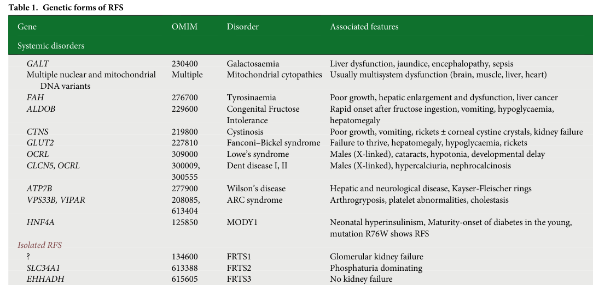

Fanconi renotubular syndrome (FRTS) is an inherited generalized dysfunction of the renal proximal tubule in which multiple reabsorptive functions are impaired, producing urinary loss of solutes normally reclaimed in the proximal nephron — glucose, phosphate, amino acids, bicarbonate, urate, and low-molecular-weight proteins. Several distinct monogenic forms are recognized (FRTS1–FRTS5), caused by variants in GATM, SLC34A1, EHHADH, HNF4A, and NDUFAF6, that converge on a final common pathway of proximal tubular transport failure — most often through proximal tubular mitochondrial energy failure. Clinical consequences include proximal (type 2) renal tubular acidosis, hypophosphatemic rickets/osteomalacia, growth failure, and, in some subtypes, progressive chronic kidney disease. FRTS is the inherited renal tubulopathy and is distinct both from Fanconi anemia (an unrelated bone-marrow-failure disorder) and from secondary/acquired Fanconi syndrome (e.g., cystinosis, tyrosinemia, drugs/toxins).
Ask a research question about Fanconi Renotubular Syndrome. OpenScientist will conduct autonomous deep research using the Disorder Mechanisms Knowledge Base and PubMed literature (typically 10-30 minutes).
Do not include personal health information in your question. Questions and results are cached in your browser's local storage.
Conditions with similar clinical presentations that must be differentiated from Fanconi Renotubular Syndrome:
name: Fanconi Renotubular Syndrome
category: Mendelian
creation_date: "2026-06-17T00:00:00Z"
synonyms:
- Fanconi renotubular syndrome
- FRTS
- Renal Fanconi syndrome
- Fanconi-Debre-de Toni syndrome
- Idiopathic Fanconi syndrome
description: >
Fanconi renotubular syndrome (FRTS) is an inherited generalized dysfunction of
the renal proximal tubule in which multiple reabsorptive functions are
impaired, producing urinary loss of solutes normally reclaimed in the proximal
nephron — glucose, phosphate, amino acids, bicarbonate, urate, and
low-molecular-weight proteins. Several distinct monogenic forms are recognized
(FRTS1–FRTS5), caused by variants in GATM, SLC34A1, EHHADH, HNF4A, and
NDUFAF6, that converge on a final common pathway of proximal tubular transport
failure — most often through proximal tubular mitochondrial energy failure.
Clinical consequences include proximal (type 2) renal tubular acidosis,
hypophosphatemic rickets/osteomalacia, growth failure, and, in some subtypes,
progressive chronic kidney disease. FRTS is the inherited renal tubulopathy and
is distinct both from Fanconi anemia (an unrelated bone-marrow-failure
disorder) and from secondary/acquired Fanconi syndrome (e.g., cystinosis,
tyrosinemia, drugs/toxins).
disease_term:
preferred_term: Fanconi renotubular syndrome
term:
id: MONDO:0001083
label: Fanconi renotubular syndrome
parents:
- Renal tubular transport disease
- Renal tubule disorder
has_subtypes:
- name: FRTS1
display_name: FRTS1 (GATM)
classification: genetic
description: >
Autosomal dominant FRTS caused by monoallelic missense variants in GATM
(glycine amidinotransferase), a proximal tubular enzyme of creatine
biosynthesis. Mutant GATM forms intramitochondrial fibrillary aggregates,
driving ROS production, NLRP3 inflammasome activation, and progressive renal
fibrosis; FRTS1 kindreds can progress to kidney failure (OMIM #134600).
genes:
- preferred_term: GATM
term:
id: hgnc:4175
label: GATM
inheritance:
- name: Autosomal dominant
evidence:
- reference: PMID:29654216
reference_title: "Glycine Amidinotransferase (GATM), Renal Fanconi Syndrome, and Kidney Failure."
supports: SUPPORT
evidence_source: HUMAN_CLINICAL
snippet: "fully penetrant heterozygous missense mutations in GATM trigger intramitochondrial fibrillary deposition of GATM and lead to elongated and abnormal mitochondria"
explanation: Defines FRTS1 as a dominant GATM-related proximal tubular disorder with mitochondrial aggregate pathology.
- name: FRTS2
display_name: FRTS2 (SLC34A1)
classification: genetic
description: >
A phosphate-wasting-predominant form attributed to SLC34A1, which encodes
the proximal tubular sodium-phosphate cotransporter NaPi-IIa. Loss of
NaPi-IIa-mediated phosphate reabsorption causes phosphaturia, hypophosphatemia,
and rickets, with a proposed downstream intracellular phosphate depletion and
impaired ATP generation. The classic recessive FRTS2 description is extremely
limited (reported in only two siblings) and the recessive Fanconi attribution
is debated; the broader SLC34A1 spectrum includes hypercalciuria and
nephrocalcinosis (OMIM #613388).
genes:
- preferred_term: SLC34A1
term:
id: hgnc:11019
label: SLC34A1
inheritance:
- name: Autosomal recessive
evidence:
- reference: PMID:31474092
reference_title: "Proximal renal tubular acidosis with and without Fanconi syndrome."
supports: SUPPORT
evidence_source: HUMAN_CLINICAL
snippet: "Primary inherited Fanconi syndrome is caused by a mutation in the sodium-phosphate cotransporter (NaPi-II) in the proximal tubule."
explanation: Attributes an inherited proximal tubular Fanconi phenotype to NaPi-II/SLC34A1 dysfunction.
- name: FRTS3
display_name: FRTS3 (EHHADH)
classification: genetic
description: >
Autosomal dominant isolated FRTS caused by the heterozygous EHHADH p.E3K
missense variant, which creates a new N-terminal mitochondrial targeting
motif that mistargets the peroxisomal fatty-acid-oxidation enzyme EHHADH to
mitochondria, impairing oxidative phosphorylation by a dominant-negative
mechanism. Affected individuals show lifelong proximal solute loss but
typically preserved glomerular filtration (no kidney failure), distinguishing
FRTS3 from other subtypes (OMIM #615605).
genes:
- preferred_term: EHHADH
term:
id: hgnc:3247
label: EHHADH
inheritance:
- name: Autosomal dominant
evidence:
- reference: PMID:24401050
reference_title: "Mistargeting of peroxisomal EHHADH and inherited renal Fanconi's syndrome."
supports: SUPPORT
evidence_source: HUMAN_CLINICAL
snippet: "a heterozygous missense mutation in EHHADH segregated with the disease"
explanation: Establishes FRTS3 as a dominant EHHADH-related isolated Fanconi syndrome.
- name: FRTS4
display_name: FRTS4 (HNF4A R76W/R85W)
classification: genetic
description: >
Autosomal dominant FRTS caused by the variant-specific HNF4A p.R76W (also
annotated p.R85W or p.R63W) missense mutation in the DNA-binding domain. This
transcription-factor defect reduces expression of proximal tubular programs
and is associated, in the same individuals, with neonatal hyperinsulinism,
macrosomia, and later MODY1-type diabetes — a renal phenotype unique to this
specific HNF4A allele (OMIM #616026).
genes:
- preferred_term: HNF4A
term:
id: hgnc:5024
label: HNF4A
inheritance:
- name: Autosomal dominant
evidence:
- reference: PMID:24285859
reference_title: "The HNF4A R76W mutation causes atypical dominant Fanconi syndrome in addition to a beta cell phenotype."
supports: SUPPORT
evidence_source: HUMAN_CLINICAL
snippet: "The HNF4A R76W mutation is an unusual example of a mutation specific phenotype, with autosomal dominant atypical Fanconi syndrome in addition to the established beta cell phenotype."
explanation: Defines FRTS4 as the mutation-specific dominant HNF4A R76W Fanconi/beta-cell phenotype.
- name: FRTS5
display_name: FRTS5 (NDUFAF6, Acadian variant)
classification: genetic
description: >
The Acadian variant of Fanconi syndrome, caused by a homozygous non-coding
NDUFAF6 splicing variant that abolishes the mitochondria-localized NDUFAF6
isoform, producing respiratory chain complex I deficiency. It presents with
generalized proximal tubular dysfunction from birth, slowly progressive
chronic kidney disease, and pulmonary interstitial fibrosis, and occurs in
the Acadian founder population of Nova Scotia, Canada.
genes:
- preferred_term: NDUFAF6
term:
id: hgnc:28625
label: NDUFAF6
inheritance:
- name: Autosomal recessive
evidence:
- reference: PMID:27466185
reference_title: "Acadian variant of Fanconi syndrome is caused by mitochondrial respiratory chain complex I deficiency due to a non-coding mutation in complex I assembly factor NDUFAF6."
supports: SUPPORT
evidence_source: HUMAN_CLINICAL
snippet: "The Acadian variant of Fanconi Syndrome refers to a specific condition characterized by generalized proximal tubular dysfunction from birth, slowly progressive chronic kidney disease and pulmonary interstitial fibrosis."
explanation: Defines FRTS5 (Acadian variant) as a complex I-deficiency proximal tubulopathy with CKD and lung fibrosis.
pathophysiology:
- name: Proximal tubular transport and energy-metabolism defect
description: >
Each monogenic FRTS subtype introduces a distinct primary lesion in the
proximal tubular epithelial cell: a transcriptional program defect (HNF4A),
loss of a specific apical transporter (SLC34A1/NaPi-IIa), or a defect in
mitochondrial energy provision (EHHADH mistargeting, NDUFAF6 complex I
deficiency, GATM mitochondrial aggregates). Because vectorial proximal
reabsorption is highly ATP-dependent, mitochondrial energy failure is a
recurrent upstream theme across subtypes.
genes:
- preferred_term: HNF4A
term:
id: hgnc:5024
label: HNF4A
- preferred_term: EHHADH
term:
id: hgnc:3247
label: EHHADH
- preferred_term: SLC34A1
term:
id: hgnc:11019
label: SLC34A1
cell_types:
- preferred_term: Proximal tubule epithelial cell
term:
id: CL:0002306
label: epithelial cell of proximal tubule
cellular_components:
- preferred_term: mitochondrion
term:
id: GO:0005739
label: mitochondrion
biological_processes:
- preferred_term: renal absorption
term:
id: GO:0070293
label: renal absorption
modifier: DECREASED
- preferred_term: oxidative phosphorylation
term:
id: GO:0006119
label: oxidative phosphorylation
modifier: DECREASED
locations:
- preferred_term: proximal tubule
term:
id: UBERON:0004134
label: proximal tubule
evidence:
- reference: PMID:24401050
reference_title: "Mistargeting of peroxisomal EHHADH and inherited renal Fanconi's syndrome."
supports: SUPPORT
evidence_source: HUMAN_CLINICAL
snippet: "In renal Fanconi's syndrome, dysfunction in proximal tubular cells leads to renal losses of water, electrolytes, and low-molecular-weight nutrients."
explanation: Establishes proximal tubular cell dysfunction as the unifying lesion in renal Fanconi syndrome.
- reference: PMID:24401050
reference_title: "Mistargeting of peroxisomal EHHADH and inherited renal Fanconi's syndrome."
supports: SUPPORT
evidence_source: HUMAN_CLINICAL
snippet: "Studies of proximal tubular cells revealed impaired mitochondrial oxidative phosphorylation and defects in the transport of fluids and a glucose analogue across the epithelium."
explanation: Links the proximal tubular energy defect to failure of solute transport in FRTS3.
downstream:
- target: Generalized proximal tubular reabsorptive failure
description: >
The primary transporter/energy lesion produces global failure of proximal
reabsorption of glucose, phosphate, amino acids, bicarbonate, urate, and
low-molecular-weight proteins.
causal_link_type: DIRECT
evidence:
- reference: PMID:31474092
reference_title: "Proximal renal tubular acidosis with and without Fanconi syndrome."
supports: SUPPORT
evidence_source: HUMAN_CLINICAL
snippet: "Fanconi syndrome, which is characterized by a defect in proximal tubular reabsorption of glucose, amino acids, uric acid, phosphate, and HCO3-"
explanation: Defines the generalized proximal reabsorptive failure that the primary lesion produces.
- name: Generalized proximal tubular reabsorptive failure
description: >
Failure of proximal reabsorption causes urinary wasting of glucose
(glycosuria with normal serum glucose), phosphate (phosphaturia), amino acids
(generalized aminoaciduria), bicarbonate (proximal/type 2 renal tubular
acidosis), urate (hypouricemia), and low-molecular-weight proteins. The
proximal bicarbonate-wasting defect overwhelms the limited distal
bicarbonate-reclamation capacity, producing a normal anion-gap metabolic
acidosis.
cell_types:
- preferred_term: Proximal tubule epithelial cell
term:
id: CL:0002306
label: epithelial cell of proximal tubule
chemical_entities:
- preferred_term: phosphate
term:
id: CHEBI:18367
label: phosphate(3-)
- preferred_term: amino acid
term:
id: CHEBI:33709
label: amino acid
- preferred_term: glucose
term:
id: CHEBI:17234
label: glucose
- preferred_term: hydrogencarbonate
term:
id: CHEBI:17544
label: hydrogencarbonate
biological_processes:
- preferred_term: phosphate ion transmembrane transport
term:
id: GO:0035435
label: phosphate ion transmembrane transport
modifier: DECREASED
- preferred_term: amino acid transmembrane transport
term:
id: GO:0003333
label: amino acid transmembrane transport
modifier: DECREASED
evidence:
- reference: PMID:31474092
reference_title: "Proximal renal tubular acidosis with and without Fanconi syndrome."
supports: SUPPORT
evidence_source: HUMAN_CLINICAL
snippet: "Bicarbonate wastage seen in type II RTA indicates that the proximal tubular defect is severe enough to overwhelm the capacity for HCO3- reabsorption beyond the proximal tubule."
explanation: Explains the proximal (type 2) RTA component of FRTS as bicarbonate wasting exceeding distal reclamation.
- reference: PMID:24285859
reference_title: "The HNF4A R76W mutation causes atypical dominant Fanconi syndrome in addition to a beta cell phenotype."
supports: SUPPORT
evidence_source: HUMAN_CLINICAL
snippet: "a novel phenotype of proximal tubulopathy, characterised by generalised aminoaciduria, low molecular weight proteinuria, glycosuria, hyperphosphaturia and hypouricaemia"
explanation: Documents the multi-solute wasting profile of generalized proximal tubular failure in FRTS4.
downstream:
- target: Hypophosphatemic rickets, acidosis, and growth failure
description: >
Renal phosphate wasting and bicarbonate loss drive hypophosphatemic
rickets/osteomalacia, metabolic acidosis, and growth failure.
causal_link_type: DIRECT
evidence:
- reference: PMID:24285859
reference_title: "The HNF4A R76W mutation causes atypical dominant Fanconi syndrome in addition to a beta cell phenotype."
supports: SUPPORT
evidence_source: HUMAN_CLINICAL
snippet: "The usual presenting clinical features are growth failure and rickets in childhood."
explanation: Connects proximal solute wasting to the typical presenting skeletal and growth consequences.
- name: Hypophosphatemic rickets, acidosis, and growth failure
description: >
Chronic phosphate and bicarbonate wasting impair skeletal mineralization,
producing hypophosphatemic rickets in children and osteomalacia in adults,
together with normal anion-gap metabolic acidosis and impaired linear growth.
In some subtypes (FRTS1, FRTS4, FRTS5) the disease additionally progresses to
chronic kidney disease, whereas FRTS3 (EHHADH) characteristically preserves
glomerular filtration.
evidence:
- reference: PMID:24285859
reference_title: "The HNF4A R76W mutation causes atypical dominant Fanconi syndrome in addition to a beta cell phenotype."
supports: SUPPORT
evidence_source: HUMAN_CLINICAL
snippet: "Two sisters were diagnosed with Fanconi syndrome due to short stature and rickets."
explanation: Documents rickets and short stature as the skeletal/growth consequences of FRTS.
phenotypes:
- name: Renal Fanconi syndrome
category: Renal
phenotype_term:
preferred_term: Renal Fanconi syndrome
term:
id: HP:0001994
label: Renal Fanconi syndrome
evidence:
- reference: PMID:30046000
reference_title: "Hnf4a deletion in the mouse kidney phenocopies Fanconi renotubular syndrome."
supports: SUPPORT
evidence_source: MODEL_ORGANISM
snippet: "Dysfunction of the proximal tubule segment can lead to Fanconi renotubular syndrome (FRTS), with major symptoms such as excess excretion of water, glucose, and phosphate in the urine."
explanation: Describes the generalized proximal tubular dysfunction that defines the renal Fanconi phenotype.
- name: Glycosuria
category: Renal
description: Urinary glucose loss with normal serum glucose.
phenotype_term:
preferred_term: Glycosuria
term:
id: HP:0003076
label: Glycosuria
evidence:
- reference: PMID:24285859
reference_title: "The HNF4A R76W mutation causes atypical dominant Fanconi syndrome in addition to a beta cell phenotype."
supports: SUPPORT
evidence_source: HUMAN_CLINICAL
snippet: "generalised aminoaciduria, low molecular weight proteinuria, glycosuria, hyperphosphaturia and hypouricaemia"
explanation: Lists glycosuria as part of the FRTS proximal tubular wasting profile.
- name: Generalized aminoaciduria
category: Renal
phenotype_term:
preferred_term: Generalized aminoaciduria
term:
id: HP:0002909
label: Generalized aminoaciduria
evidence:
- reference: PMID:24285859
reference_title: "The HNF4A R76W mutation causes atypical dominant Fanconi syndrome in addition to a beta cell phenotype."
supports: SUPPORT
evidence_source: HUMAN_CLINICAL
snippet: "generalised aminoaciduria, low molecular weight proteinuria, glycosuria, hyperphosphaturia and hypouricaemia"
explanation: Lists generalized aminoaciduria as part of the FRTS proximal wasting profile.
- name: Low-molecular-weight proteinuria
category: Renal
phenotype_term:
preferred_term: Low-molecular-weight proteinuria
term:
id: HP:0003126
label: Low-molecular-weight proteinuria
evidence:
- reference: PMID:25492894
reference_title: "Renal Fanconi syndrome: taking a proximal look at the nephron."
supports: SUPPORT
evidence_source: HUMAN_CLINICAL
snippet: "the typical features of RFS, such as low-molecular weight proteinuria, aminoaciduria, glycosuria and phosphaturia with consequent rickets"
explanation: Identifies low-molecular-weight proteinuria as a typical feature of renal Fanconi syndrome.
- name: Renal phosphate wasting
category: Renal
phenotype_term:
preferred_term: Renal phosphate wasting
term:
id: HP:0000117
label: Renal phosphate wasting
evidence:
- reference: PMID:25492894
reference_title: "Renal Fanconi syndrome: taking a proximal look at the nephron."
supports: SUPPORT
evidence_source: HUMAN_CLINICAL
snippet: "low-molecular weight proteinuria, aminoaciduria, glycosuria and phosphaturia with consequent rickets"
explanation: Documents phosphaturia (renal phosphate wasting) as a typical FRTS feature.
- name: Hypophosphatemia
category: Renal
phenotype_term:
preferred_term: Hypophosphatemia
term:
id: HP:0002148
label: Hypophosphatemia
evidence:
- reference: PMID:40225330
reference_title: "Case report: Reversible Fanconi syndrome due to vitamin D deficiency in a patient with epilepsy harbouring a pathogenic variant in the SLC34A1 gene."
supports: SUPPORT
evidence_source: HUMAN_CLINICAL
snippet: "Urinalysis indicated low tubular reabsorption of phosphate (TRP % 10,7), along with bicarbonate, uric acid and amino acid loss, consistent with renal Fanconi syndrome."
explanation: Documents low tubular phosphate reabsorption with hypophosphatemia in an SLC34A1-related Fanconi presentation.
- name: Proximal renal tubular acidosis
category: Renal
description: Normal anion-gap metabolic acidosis from proximal bicarbonate wasting (type 2 RTA).
phenotype_term:
preferred_term: Proximal renal tubular acidosis
term:
id: HP:0002049
label: Proximal renal tubular acidosis
evidence:
- reference: PMID:31474092
reference_title: "Proximal renal tubular acidosis with and without Fanconi syndrome."
supports: SUPPORT
evidence_source: HUMAN_CLINICAL
snippet: "Proximal renal tubular acidosis (RTA) is caused by a defect in bicarbonate"
explanation: Defines proximal (type 2) RTA, the acid-base component of FRTS.
- name: Hypouricemia
category: Renal
description: Low serum urate from renal urate wasting (classic feature; may be absent in atypical cases).
phenotype_term:
preferred_term: Hypouricemia
term:
id: HP:0003537
label: Hypouricemia
evidence:
- reference: PMID:24285859
reference_title: "The HNF4A R76W mutation causes atypical dominant Fanconi syndrome in addition to a beta cell phenotype."
supports: SUPPORT
evidence_source: HUMAN_CLINICAL
snippet: "generalised aminoaciduria, low molecular weight proteinuria, glycosuria, hyperphosphaturia and hypouricaemia"
explanation: Lists hypouricemia as part of the classic FRTS proximal wasting profile.
- name: Hypophosphatemic rickets
category: Skeletal
phenotype_term:
preferred_term: Hypophosphatemic rickets
term:
id: HP:0004912
label: Hypophosphatemic rickets
evidence:
- reference: PMID:25492894
reference_title: "Renal Fanconi syndrome: taking a proximal look at the nephron."
supports: SUPPORT
evidence_source: HUMAN_CLINICAL
snippet: "glycosuria and phosphaturia with consequent rickets"
explanation: Links renal phosphate wasting to rickets in FRTS.
- name: Growth delay
category: Growth
phenotype_term:
preferred_term: Growth delay
term:
id: HP:0001510
label: Growth delay
evidence:
- reference: PMID:24285859
reference_title: "The HNF4A R76W mutation causes atypical dominant Fanconi syndrome in addition to a beta cell phenotype."
supports: SUPPORT
evidence_source: HUMAN_CLINICAL
snippet: "The usual presenting clinical features are growth failure and rickets in childhood."
explanation: Documents growth failure as a typical presenting feature of FRTS.
- name: Nephrocalcinosis
category: Renal
subtypes:
- FRTS4
phenotype_term:
preferred_term: Nephrocalcinosis
term:
id: HP:0000121
label: Nephrocalcinosis
evidence:
- reference: PMID:24285859
reference_title: "The HNF4A R76W mutation causes atypical dominant Fanconi syndrome in addition to a beta cell phenotype."
supports: SUPPORT
evidence_source: HUMAN_CLINICAL
snippet: "six patients heterozygous for the p.R76W HNF4A mutation who have Fanconi syndrome and nephrocalcinosis"
explanation: Documents nephrocalcinosis as a distinguishing feature of HNF4A R76W FRTS4.
- name: Chronic kidney disease
category: Renal
description: Progressive CKD in some subtypes (FRTS1, FRTS4, FRTS5); FRTS3 (EHHADH) characteristically preserves GFR.
subtypes:
- FRTS1
- FRTS4
- FRTS5
phenotype_term:
preferred_term: Chronic kidney disease
term:
id: HP:0012622
label: Chronic kidney disease
evidence:
- reference: PMID:27466185
reference_title: "Acadian variant of Fanconi syndrome is caused by mitochondrial respiratory chain complex I deficiency due to a non-coding mutation in complex I assembly factor NDUFAF6."
supports: SUPPORT
evidence_source: HUMAN_CLINICAL
snippet: "generalized proximal tubular dysfunction from birth, slowly progressive chronic kidney disease and pulmonary interstitial fibrosis"
explanation: Documents progressive CKD in FRTS5 (Acadian variant).
- name: Hyperinsulinemic hypoglycemia
category: Endocrine
description: Neonatal hyperinsulinism with macrosomia, specific to the HNF4A R76W subtype (FRTS4).
subtypes:
- FRTS4
phenotype_term:
preferred_term: Hyperinsulinemic hypoglycemia
term:
id: HP:0000825
label: Hyperinsulinemic hypoglycemia
evidence:
- reference: PMID:24285859
reference_title: "The HNF4A R76W mutation causes atypical dominant Fanconi syndrome in addition to a beta cell phenotype."
supports: SUPPORT
evidence_source: HUMAN_CLINICAL
snippet: "Heterozygous HNF4A mutations cause a beta cell phenotype of neonatal hyperinsulinism with macrosomia and young onset diabetes."
explanation: Documents the HNF4A beta-cell endocrine phenotype accompanying FRTS4.
genetic:
- name: GATM variants
gene_term:
preferred_term: GATM
term:
id: hgnc:4175
label: GATM
association: Causative
inheritance:
- name: Autosomal dominant
evidence:
- reference: PMID:29654216
reference_title: "Glycine Amidinotransferase (GATM), Renal Fanconi Syndrome, and Kidney Failure."
supports: SUPPORT
evidence_source: HUMAN_CLINICAL
snippet: "We clinically and genetically characterized members of five families with autosomal dominant renal Fanconi syndrome and kidney failure."
explanation: Establishes autosomal dominant inheritance for GATM-related FRTS1.
features: >
GATM encodes glycine amidinotransferase, a proximal tubular creatine-pathway
enzyme. Heterozygous missense variants create a novel intramolecular
interaction interface that drives linear aggregation within mitochondria.
evidence:
- reference: PMID:29654216
reference_title: "Glycine Amidinotransferase (GATM), Renal Fanconi Syndrome, and Kidney Failure."
supports: SUPPORT
evidence_source: HUMAN_CLINICAL
snippet: "the particular GATM mutations, identified in 28 members of the five families, create an additional interaction interface within the GATM protein and likely cause the linear aggregation of GATM"
explanation: Identifies the aggregation-promoting GATM missense mechanism in FRTS1.
- name: EHHADH variant
gene_term:
preferred_term: EHHADH
term:
id: hgnc:3247
label: EHHADH
association: Causative
inheritance:
- name: Autosomal dominant
evidence:
- reference: PMID:24401050
reference_title: "Mistargeting of peroxisomal EHHADH and inherited renal Fanconi's syndrome."
supports: SUPPORT
evidence_source: HUMAN_CLINICAL
snippet: "We clinically and genetically characterized members of a five-generation black family with isolated autosomal dominant Fanconi's syndrome."
explanation: Establishes autosomal dominant inheritance for EHHADH-related FRTS3.
variants:
- name: EHHADH p.E3K
description: >
A heterozygous N-terminal missense variant that creates a de novo
mitochondrial targeting motif, mistargeting peroxisomal EHHADH to
mitochondria. Ehhadh knockout mice are unaffected, indicating a
dominant-negative rather than haploinsufficiency mechanism.
evidence:
- reference: PMID:24401050
reference_title: "Mistargeting of peroxisomal EHHADH and inherited renal Fanconi's syndrome."
supports: SUPPORT
evidence_source: HUMAN_CLINICAL
snippet: "The p.E3K mutation created a new mitochondrial targeting motif in the N-terminal portion of EHHADH"
explanation: Documents the mistargeting variant mechanism of FRTS3.
- reference: PMID:24401050
reference_title: "Mistargeting of peroxisomal EHHADH and inherited renal Fanconi's syndrome."
supports: SUPPORT
evidence_source: MODEL_ORGANISM
snippet: "Ehhadh knockout mice showed no abnormalities in renal tubular cells, a finding that indicates a dominant negative nature of the mutation rather than haploinsufficiency."
explanation: Supports the dominant-negative mechanism via the unaffected knockout mouse.
- name: HNF4A R76W variant
gene_term:
preferred_term: HNF4A
term:
id: hgnc:5024
label: HNF4A
association: Causative
inheritance:
- name: Autosomal dominant
evidence:
- reference: PMID:24285859
reference_title: "The HNF4A R76W mutation causes atypical dominant Fanconi syndrome in addition to a beta cell phenotype."
supports: SUPPORT
evidence_source: HUMAN_CLINICAL
snippet: "autosomal dominant atypical Fanconi syndrome in addition to the established beta cell phenotype"
explanation: Establishes autosomal dominant inheritance for the HNF4A R76W FRTS4 phenotype.
variants:
- name: HNF4A p.R76W (p.R85W / p.R63W)
description: >
A variant-specific DNA-binding-domain missense allele that reduces DNA
binding affinity and acts by a dominant-negative mechanism, causing nuclear
depletion of wild-type protein and cytosolic aggregates with mitochondrial
dysfunction.
evidence:
- reference: PMID:24285859
reference_title: "The HNF4A R76W mutation causes atypical dominant Fanconi syndrome in addition to a beta cell phenotype."
supports: SUPPORT
evidence_source: HUMAN_CLINICAL
snippet: "the R76 residue is directly involved in DNA binding and the R76W mutation reduces DNA binding affinity"
explanation: Documents the DNA-binding mechanism of the HNF4A R76W variant.
- reference: PMID:31875549
reference_title: "Molecular Basis for Autosomal-Dominant Renal Fanconi Syndrome Caused by HNF4A."
supports: SUPPORT
evidence_source: MODEL_ORGANISM
snippet: "the nuclear depletion led to mitochondrial defects and lipid droplet accumulation, the cytosolic aggregates triggered the expansion of the endoplasmic reticulum (ER), autophagy"
explanation: Mechanistic model showing dominant-negative nuclear depletion plus cytosolic aggregate toxicity for HNF4A FRTS.
- name: SLC34A1 variants
gene_term:
preferred_term: SLC34A1
term:
id: hgnc:11019
label: SLC34A1
association: Causative
features: >
SLC34A1 encodes the proximal tubular sodium-phosphate cotransporter NaPi-IIa.
Loss-of-function variants cause renal phosphate wasting; the recessive FRTS2
attribution is debated and based on very limited classic descriptions.
evidence:
- reference: PMID:31474092
reference_title: "Proximal renal tubular acidosis with and without Fanconi syndrome."
supports: SUPPORT
evidence_source: HUMAN_CLINICAL
snippet: "Primary inherited Fanconi syndrome is caused by a mutation in the sodium-phosphate cotransporter (NaPi-II) in the proximal tubule."
explanation: Attributes inherited proximal tubular phosphate wasting to SLC34A1/NaPi-II.
- name: NDUFAF6 variant
gene_term:
preferred_term: NDUFAF6
term:
id: hgnc:28625
label: NDUFAF6
association: Causative
inheritance:
- name: Autosomal recessive
evidence:
- reference: PMID:27466185
reference_title: "Acadian variant of Fanconi syndrome is caused by mitochondrial respiratory chain complex I deficiency due to a non-coding mutation in complex I assembly factor NDUFAF6."
supports: SUPPORT
evidence_source: HUMAN_CLINICAL
snippet: "nine affected individuals were homozygous for the ultra-rare non-coding variant chr8:96046914 T > C; rs575462405, whereas 13 healthy siblings were either heterozygotes or lacked the mutant allele"
explanation: Establishes recessive inheritance of the NDUFAF6 Acadian founder variant in FRTS5.
features: >
A homozygous non-coding NDUFAF6 splicing variant in the Acadian founder
population abolishes the mitochondria-localized NDUFAF6 isoform, causing
respiratory chain complex I deficiency.
evidence:
- reference: PMID:27466185
reference_title: "Acadian variant of Fanconi syndrome is caused by mitochondrial respiratory chain complex I deficiency due to a non-coding mutation in complex I assembly factor NDUFAF6."
supports: SUPPORT
evidence_source: HUMAN_CLINICAL
snippet: "Affected kidney and lung showed specific loss of the mitochondria-located NDUFAF6 isoform and ultrastructural characteristics of mitochondrial dysfunction."
explanation: Identifies loss of the mitochondrial NDUFAF6 isoform as the molecular defect in FRTS5.
environmental: []
treatments:
- name: Phosphate supplementation
description: >
Oral phosphate replacement to correct renal phosphate wasting and treat
hypophosphatemic rickets; a mainstay of supportive management.
treatment_term:
preferred_term: nutritional supplementation
term:
id: MAXO:0000106
label: nutritional supplementation
therapeutic_agent:
- preferred_term: phosphate
term:
id: CHEBI:18367
label: phosphate(3-)
evidence:
- reference: PMID:40225330
reference_title: "Case report: Reversible Fanconi syndrome due to vitamin D deficiency in a patient with epilepsy harbouring a pathogenic variant in the SLC34A1 gene."
supports: SUPPORT
evidence_source: HUMAN_CLINICAL
snippet: "the child was commenced on Joulie solution (70 mg/kg/day of phosphate), calcitriol (0.03 mcg/kg/die), and ergocalciferol"
explanation: Documents oral phosphate replacement as part of supportive management of Fanconi syndrome.
- name: Vitamin D / calcitriol therapy
description: >
Active vitamin D (calcitriol) and vitamin D repletion to support bone
mineralization in hypophosphatemic rickets/osteomalacia. Nutritional vitamin
D deficiency can itself produce a reversible Fanconi-like syndrome, so
repletion is both therapeutic and diagnostically informative.
treatment_term:
preferred_term: vitamin D supplementation
term:
id: MAXO:0000110
label: vitamin D supplementation
therapeutic_agent:
- preferred_term: calcitriol
term:
id: CHEBI:17823
label: calcitriol
evidence:
- reference: PMID:40225330
reference_title: "Case report: Reversible Fanconi syndrome due to vitamin D deficiency in a patient with epilepsy harbouring a pathogenic variant in the SLC34A1 gene."
supports: SUPPORT
evidence_source: HUMAN_CLINICAL
snippet: "we observed a dramatic improvement in laboratory parameters within two weeks from the treatment initiation, including normalisation of phosphate and PTH concentrations and resolution of Fanconi syndrome"
explanation: Demonstrates rapid biochemical resolution with phosphate plus vitamin D/calcitriol therapy.
- name: Alkali (bicarbonate) therapy
description: >
Oral alkali (bicarbonate, with potassium citrate where stone risk or
hypokalemia is present) to correct the proximal (type 2) renal tubular
acidosis. Proximal RTA typically requires large alkali doses because of
ongoing bicarbonate wasting.
treatment_term:
preferred_term: Pharmacotherapy
term:
id: NCIT:C15986
label: Pharmacotherapy
therapeutic_agent:
- preferred_term: hydrogencarbonate
term:
id: CHEBI:17544
label: hydrogencarbonate
evidence:
- reference: PMID:31474092
reference_title: "Proximal renal tubular acidosis with and without Fanconi syndrome."
supports: SUPPORT
evidence_source: HUMAN_CLINICAL
snippet: "manifests as normal anion-gap metabolic acidosis due to HCO3- wastage"
explanation: Establishes bicarbonate wasting as the target of alkali therapy in proximal RTA.
- name: Supportive electrolyte and solute replacement
description: >
General supportive management of FRTS is directed at replacing the solutes
lost in the urine (phosphate, bicarbonate, potassium, water) and treating the
consequent rickets, acidosis, and growth failure. Treatment is largely
subtype-independent and symptom-directed.
treatment_term:
preferred_term: supportive care
term:
id: MAXO:0000950
label: supportive care
evidence:
- reference: PMID:24285859
reference_title: "The HNF4A R76W mutation causes atypical dominant Fanconi syndrome in addition to a beta cell phenotype."
supports: SUPPORT
evidence_source: HUMAN_CLINICAL
snippet: "Treatment is based on replacing the lost solutes."
explanation: States the supportive solute-replacement basis of FRTS management.
classifications:
harrisons_chapter:
- classification_value: KIDNEY_URINARY_TRACT
- classification_value: GENETICS_ENVIRONMENT_DISEASE
differential_diagnoses:
- name: Cystinosis
disease_term:
preferred_term: cystinosis
term:
id: MONDO:0016239
label: cystinosis
description: >
Cystinosis causes a secondary renal Fanconi syndrome and overlaps clinically
with primary FRTS in the proximal tubulopathy phenotype.
distinguishing_features:
- Lysosomal cystine storage with multisystem involvement (corneal crystals, hypothyroidism), unlike isolated/primary inherited FRTS.
evidence:
- reference: PMID:25492894
reference_title: "Renal Fanconi syndrome: taking a proximal look at the nephron."
supports: SUPPORT
evidence_source: HUMAN_CLINICAL
snippet: "In its isolated form, RFS only affects the PT, but not the other nephron segments."
explanation: Distinguishes isolated/primary FRTS from systemic causes such as cystinosis.
- name: Dent disease
disease_term:
preferred_term: Dent disease
term:
id: MONDO:0015612
label: Dent disease
description: >
Dent disease (CLCN5) and Lowe syndrome (OCRL) are common X-linked genetic
causes of childhood Fanconi-like presentations and are typically excluded
before broader exome sequencing.
distinguishing_features:
- Defective endocytic reabsorption (CLCN5/OCRL) rather than a primary transporter or mitochondrial energy lesion.
evidence:
- reference: PMID:32150856
reference_title: "Inherited Renal Tubulopathies-Challenges and Controversies."
supports: SUPPORT
evidence_source: HUMAN_CLINICAL
snippet: "This may derive from the variable clinical picture, overlapping phenotypes, insufficient exploration of the genome"
explanation: The overlapping phenotypes among inherited tubulopathies (including Dent disease and Lowe syndrome) make them key differentials for FRTS.
notes: >
Fanconi renotubular syndrome (FRTS) must be distinguished from Fanconi anemia,
an entirely unrelated DNA-repair/bone-marrow-failure disorder that shares only
the eponym. FRTS also refers specifically to the inherited/primary forms of
renal Fanconi syndrome; secondary (acquired) Fanconi syndrome arises from
systemic storage diseases (cystinosis, tyrosinemia, galactosemia, Wilson
disease, Fanconi-Bickel syndrome), monoclonal disorders (multiple myeloma),
autoimmune disease (Sjogren syndrome), or nephrotoxic drugs (cisplatin,
ifosfamide, tenofovir, adefovir, valproate), and is excluded from this entry's
monogenic scope. Five isolated monogenic subtypes are recognized (FRTS1 GATM,
FRTS2 SLC34A1, FRTS3 EHHADH, FRTS4 HNF4A, FRTS5 NDUFAF6). A unifying
pathophysiological theme across FRTS1, FRTS3, FRTS4, and FRTS5 is proximal
tubular mitochondrial dysfunction, reflecting the high ATP dependence of
proximal reabsorption.
references:
- reference: PMID:25492894
title: "Renal Fanconi syndrome: taking a proximal look at the nephron."
- reference: PMID:32150856
title: "Inherited Renal Tubulopathies-Challenges and Controversies."
Fanconi renotubular syndrome (FRTS)—historically also called Fanconi–Debré–de Toni syndrome—is a disorder of the renal proximal tubule in which multiple reabsorptive functions are impaired, causing urinary loss of solutes normally reclaimed in the proximal nephron (e.g., glucose, phosphate, amino acids, bicarbonate, urate, and low-molecular-weight proteins). (shen2023denovo11q13.3q13.4 pages 7-8, iancu2020inheritedrenaltubulopathies—challenges pages 3-5)
A 2023 review/case report explicitly lists five isolated FRTS subtypes and their OMIM subtype numbers (note: OMIM subtype numbers are quoted as shown in the source): - FRTS1 – GATM – OMIM #134600 (shen2023denovo11q13.3q13.4 pages 7-8) - FRTS2 – SLC34A1 – OMIM #613388 (shen2023denovo11q13.3q13.4 pages 7-8) - FRTS3 – EHHADH – OMIM #615605 (shen2023denovo11q13.3q13.4 pages 7-8) - FRTS4 – HNF4A – OMIM #616026 (hudson2024denovohnf4aassociated pages 1-3, shen2023denovo11q13.3q13.4 pages 7-8) - FRTS5 – NDUFAF6 – OMIM #134600 (as printed in the source) (shen2023denovo11q13.3q13.4 pages 7-8)
Additional disease identifiers present in retrieved texts include multiple OMIM identifiers for differential diagnoses (e.g., cystinosis, tyrosinemia, galactosemia, Fanconi–Bickel syndrome), but ICD-10/ICD-11, MeSH, Orphanet, MONDO identifiers were not available in the retrieved excerpts. (klootwijk2015renalfanconisyndrome pages 2-3, iancu2020inheritedrenaltubulopathies—challenges pages 3-5)
The evidence for FRTS is primarily derived from: - Familial human genetics / case reports (e.g., EHHADH family; HNF4A de novo case) (klootwijk2014mistargetingofperoxisomal pages 1-2, hudson2024denovohnf4aassociated pages 1-3) - Mechanistic cellular studies and model organisms (e.g., proximal tubule cells, Drosophila nephrocytes, knockout mice) (marchesin2019molecularbasisfor pages 1-3, klootwijk2014mistargetingofperoxisomal pages 1-2, marable2018hnf4adeletionin pages 5-7) - Aggregated disease-level reviews (klootwijk2015renalfanconisyndrome pages 2-3, iancu2020inheritedrenaltubulopathies—challenges pages 3-5)
FRTS may be genetic (monogenic, isolated forms) or acquired (secondary to systemic disease or nephrotoxins). (shen2023denovo11q13.3q13.4 pages 7-8)
Genetic/monogenic (isolated FRTS types 1–5): - GATM (FRTS1): mutations promote aggregation and are linked to ROS/inflammation/cell death and renal fibrosis. (shen2023denovo11q13.3q13.4 pages 7-8) - SLC34A1 (FRTS2): loss of NaPi-IIa phosphate transport → phosphate wasting; proposed to cause intracellular phosphate depletion and impaired ATP generation. (klootwijk2015renalfanconisyndrome pages 3-3, shen2023denovo11q13.3q13.4 pages 7-8) - EHHADH (FRTS3): a heterozygous missense variant (p.E3K) introduces a mitochondrial targeting motif, mislocalizing a peroxisomal enzyme to mitochondria with downstream mitochondrial dysfunction and transport failure. (klootwijk2014mistargetingofperoxisomal pages 1-2) - HNF4A (FRTS4): specific heterozygous variants (notably p.Arg85Trp; historically annotated R76W/R63W) cause an autosomal-dominant renal Fanconi phenotype with endocrine features (hyperinsulinism/MODY). (hudson2024denovohnf4aassociated pages 1-3, marchesin2019molecularbasisfor pages 1-3) - NDUFAF6 (FRTS5): aberrant splicing/loss of mitochondria-localized isoform → complex I deficiency; “Acadian variant”. (shen2023denovo11q13.3q13.4 pages 7-8, shen2023denovo11q13.3q13.4 pages 9-9)
Acquired causes (examples): - Secondary to multiple myeloma or Sjögren’s syndrome and/or exposure to drugs/toxins such as cisplatin, ifosfamide, tenofovir, adefovir, sodium valproate, and others. (shen2023denovo11q13.3q13.4 pages 7-8)
Within retrieved evidence, risk factors mainly relate to acquired Fanconi syndrome, including nephrotoxic drugs and systemic disorders (myeloma/Sjögren’s). (shen2023denovo11q13.3q13.4 pages 7-8, li2024fromraredisorders pages 2-4)
No specific protective genetic variants or environmental protective factors were identified in the retrieved texts.
The retrieved evidence highlights a practical interaction: nutritional vitamin D deficiency may produce a Fanconi-like syndrome that can reverse with repletion, which is clinically relevant when interpreting tubular phenotypes in genetically susceptible contexts (e.g., SLC34A1 variant carriers). (improda2025casereportreversible pages 1-2, improda2025casereportreversible pages 2-4)
Common proximal-tubule manifestations include: - Glycosuria (often with normal serum glucose) (hudson2024denovohnf4aassociated pages 1-3) - Phosphaturia → hypophosphatemia → rickets/osteomalacia risk (hudson2024denovohnf4aassociated pages 1-3, klootwijk2015renalfanconisyndrome pages 3-3) - Aminoaciduria (hudson2024denovohnf4aassociated pages 1-3) - Low-molecular-weight proteinuria (hudson2024denovohnf4aassociated pages 1-3, shen2023denovo11q13.3q13.4 pages 7-8) - Bicarbonate wasting / metabolic acidosis (proximal RTA) (kashoor2019proximalrenaltubular pages 1-3, hudson2024denovohnf4aassociated pages 1-3) - Hypouricemia (in classic definitions; may be absent in atypical cases) (hudson2024denovohnf4aassociated pages 1-3) Additional electrolyte findings listed in a 2023 review include hypokalemia and hyponatremia and “carbonaturia.” (shen2023denovo11q13.3q13.4 pages 7-8)
Direct QoL instruments (EQ-5D/SF-36) were not reported in the retrieved texts; however, rickets/osteomalacia, growth delay, and CKD imply substantial functional impact. (iancu2020inheritedrenaltubulopathies—challenges pages 3-5, hudson2024denovohnf4aassociated pages 1-3)
Based on phenotypes explicitly described in retrieved sources: - Glycosuria (HP:0003074) - Phosphaturia (HP:0003155) - Hypophosphatemia (HP:0002148) - Renal tubular acidosis (HP:0001947) - Aminoaciduria (HP:0003355) - Proteinuria / low-molecular-weight proteinuria (HP:0000093) - Polyuria (HP:0000103) / Polydipsia (HP:0001959) - Rickets (HP:0002748) - Nephrocalcinosis (HP:0000129) - Chronic kidney disease (HP:0012622) (iancu2020inheritedrenaltubulopathies—challenges pages 3-5, hudson2024denovohnf4aassociated pages 1-3, klootwijk2015renalfanconisyndrome pages 3-4)
Isolated FRTS subtypes 1–5 are linked to GATM, SLC34A1, EHHADH, HNF4A, NDUFAF6 as summarized above. (shen2023denovo11q13.3q13.4 pages 7-8)
Not identified in retrieved evidence.
Environmental/toxic contributors described are primarily relevant to acquired Fanconi syndrome: nephrotoxic drugs (cisplatin, ifosfamide, tenofovir, adefovir, valproate) and systemic disorders (myeloma, Sjögren’s). (shen2023denovo11q13.3q13.4 pages 7-8)
A review categorizes renal Fanconi syndrome mechanisms into three broad classes: 1) toxic metabolite accumulation (e.g., cystinosis, tyrosinaemia, Fanconi–Bickel), 2) impaired energy provision (mitochondrial cytopathies), 3) disrupted endocytosis/intracellular transport (e.g., Lowe, Dent, ARC). (klootwijk2015renalfanconisyndrome pages 3-3)
Primary site is the kidney proximal tubule. (klootwijk2015renalfanconisyndrome pages 2-3)
UBERON suggestions (non-exhaustive): - Kidney (UBERON:0002113) - Nephron (UBERON:0001285) - Proximal convoluted tubule (UBERON:0001291)
Mitochondria are repeatedly implicated, particularly in EHHADH and HNF4A forms (mitochondrial morphological changes, oxidative phosphorylation defects). (klootwijk2014mistargetingofperoxisomal pages 1-2, hudson2024denovohnf4aassociated pages 1-3, marchesin2019molecularbasisfor pages 1-3)
GO Cellular Component suggestions: - Mitochondrion (GO:0005739) - Endoplasmic reticulum (GO:0005783)
No prevalence or incidence figures were available in the retrieved texts. The literature emphasizes rarity and limited case counts for several subtypes (e.g., classic recessive SLC34A1 FRTS2 reported in only two siblings). (klootwijk2015renalfanconisyndrome pages 3-3)
Diagnosis relies on demonstrating generalized proximal tubular dysfunction, including combinations of: - hypophosphatemia with phosphaturia - glycosuria (with normal serum glucose) - aminoaciduria - low-molecular-weight proteinuria - metabolic acidosis / low bicarbonate - hypouricemia (may be absent in atypical forms) (hudson2024denovohnf4aassociated pages 1-3)
Renal imaging (e.g., ultrasound) is used to assess nephrocalcinosis/nephrocalcinosis absence/presence. (hudson2024denovohnf4aassociated pages 1-3)
Real-world implementation examples: - Targeted testing for common differentials (e.g., CLCN5/OCRL) followed by trio whole-exome sequencing to identify de novo HNF4A variants. (hudson2024denovohnf4aassociated pages 1-3) - CNV/microarray approach for chromosomal deletions in complex phenotypes with FRTS (11q13.3–q13.4 microdeletion). (shen2023denovo11q13.3q13.4 pages 6-7, shen2023denovo11q13.3q13.4 pages 7-8) - Linkage analysis and gene sequencing for familial dominant Fanconi (EHHADH). (klootwijk2014mistargetingofperoxisomal pages 1-2)
Differentials explicitly listed include: - Dent disease (CLCN5) and Lowe syndrome (OCRL) as common genetic causes of childhood FRTS-like presentations (hudson2024denovohnf4aassociated pages 1-3) - cystinosis (CTNS), tyrosinemia (FAH), galactosemia (GALT), Fanconi–Bickel syndrome (SLC2A2/GLUT2), Wilson disease (ATP7B), mitochondrial disorders, ARC syndrome (klootwijk2014mistargetingofperoxisomal pages 1-2, shen2023denovo11q13.3q13.4 pages 6-7, klootwijk2015renalfanconisyndrome pages 2-3) - acquired/toxic causes: myeloma, Sjögren’s, nephrotoxic drugs (shen2023denovo11q13.3q13.4 pages 7-8)
No survival curves or formal mortality statistics were identified in the retrieved texts.
Because Fanconi phenotypes reflect solute wasting, management is typically supportive and tailored to the biochemical losses and subtype.
Phosphate supplementation - In classic recessive SLC34A1 FRTS2 summarized by Klootwijk et al., phosphate wasting/rickets phenotype “could be ameliorated by phosphate supplementation.” (klootwijk2015renalfanconisyndrome pages 3-3) - In a pediatric SLC34A1-related cohort (n=11), oral phosphate supplementation 5–20 mg/kg/day normalized urinary calcium excretion in 10/11 and improved linear growth in all but one; all had hypercalciuria and nephrocalcinosis at diagnosis. (turan2026targetinghypercalciuriain pages 1-2)
Vitamin D / calcitriol and distinguishing nutritional vs genetic causes A 2025 case report describes a Fanconi-like syndrome in a child with severe vitamin D deficiency that reversed rapidly with supplementation; initial management included phosphate, calcitriol, and ergocalciferol with biochemical normalization in 2 weeks and radiographic healing by 6 months. (improda2025casereportreversible pages 1-2)
Alkali and citrate (case evidence) In the same 2025 case report, treatment included bicarbonates and potassium citrate, illustrating common supportive measures when acidosis and nephrolithiasis risk are present. (improda2025casereportreversible pages 2-4)
A clinicaltrials.gov search within this run did not retrieve relevant interventional trials specifically targeting genetic FRTS subtypes in the available result set. (klootwijk2015renalfanconisyndrome pages 3-4)
No primary prevention strategies for inherited FRTS were described in retrieved texts beyond general genetic counseling implications.
Secondary/tertiary prevention examples supported by evidence: - Genetic diagnosis (e.g., trio WES for de novo HNF4A) to anticipate endocrine sequelae (MODY) and ensure surveillance. (hudson2024denovohnf4aassociated pages 1-3) - Avoid/monitor potential nephrotoxins that can induce Fanconi syndrome in susceptible patients. (shen2023denovo11q13.3q13.4 pages 7-8) - Vitamin D supplementation in children at risk of deficiency (e.g., on enzyme-inducing antiepileptics) as a strategy to prevent nutritional rickets and potentially reversible Fanconi-like presentations. (improda2025casereportreversible pages 5-6)
No naturally occurring veterinary FRTS analogs were described in retrieved texts.
| Subtype | Causal gene(s) | Inheritance | Key mechanistic theme | Hallmark renal features | Notable extrarenal features | Key supporting citation |
|---|---|---|---|---|---|---|
| FRTS1 | GATM | Autosomal dominant | Mutant glycine amidinotransferase forms intracellular aggregates, increasing ROS, inflammatory signaling, cell death, and renal fibrosis; proximal-tubule mitochondrial pathology is emphasized in later mechanistic reviews (shen2023denovo11q13.3q13.4 pages 7-8, iancu2020inheritedrenaltubulopathies—challenges pages 3-5) | Generalized proximal tubular dysfunction/Fanconi syndrome; progressive CKD reported for FRTS1 kindreds (klootwijk2015renalfanconisyndrome pages 3-4, shen2023denovo11q13.3q13.4 pages 7-8) | No consistent syndromic extrarenal phenotype established in the gathered evidence | Shen 2023, Front Pediatr, https://doi.org/10.3389/fped.2023.1097062 (shen2023denovo11q13.3q13.4 pages 7-8) |
| FRTS2 | SLC34A1 | Autosomal recessive (debated/very rare in classic FRTS2) | Loss of NaPi-IIa–mediated phosphate reabsorption causes phosphate wasting; proposed intracellular phosphate depletion leads to insufficient ATP generation in proximal tubule cells (klootwijk2015renalfanconisyndrome pages 3-3, shen2023denovo11q13.3q13.4 pages 7-8) | Phosphaturia-dominant Fanconi phenotype, hypophosphatemia/rickets, hyperphosphaturia; reported in only two siblings in classic recessive FRTS2 literature summarized by Klootwijk et al. (klootwijk2015renalfanconisyndrome pages 3-3) | Rickets/osteopenia predominate; broader SLC34A1 spectrum can include nephrolithiasis/nephrocalcinosis and infantile hypercalcemia phenotypes (klootwijk2015renalfanconisyndrome pages 3-3) | Klootwijk 2015, NDT, https://doi.org/10.1093/ndt/gfu377 (klootwijk2015renalfanconisyndrome pages 3-3) |
| FRTS3 | EHHADH | Autosomal dominant | p.E3K creates a de novo mitochondrial targeting motif in the peroxisomal enzyme EHHADH, causing mistargeting to mitochondria, impaired oxidative phosphorylation, and dominant-negative disruption of proximal-tubule energy metabolism (klootwijk2014mistargetingofperoxisomal pages 1-2, klootwijk2015renalfanconisyndrome pages 4-5) | Isolated Fanconi syndrome with lifelong proximal tubular solute loss; normal/age-appropriate GFR and “no kidney failure” emphasized in the family originally studied (klootwijk2015renalfanconisyndrome pages 3-4, klootwijk2015renalfanconisyndrome pages 3-3) | No major consistent extrarenal syndrome despite broader tissue expression of EHHADH (klootwijk2015renalfanconisyndrome pages 3-4, klootwijk2014mistargetingofperoxisomal pages 1-2) | Klootwijk 2014, N Engl J Med, https://doi.org/10.1056/NEJMoa1307581 (klootwijk2014mistargetingofperoxisomal pages 1-2) |
| FRTS4 | HNF4A | Autosomal dominant | Specific heterozygous HNF4A variants (especially p.Arg85Trp / historical p.R76W or p.R63W annotation differences) alter transcriptional control of proximal-tubule programs, reduce expression of proximal tubule-specific genes, and are linked to mitochondrial/lipid metabolic abnormalities (marchesin2019molecularbasisfor pages 1-3, marable2018hnf4adeletionin pages 1-2, shen2023denovo11q13.3q13.4 pages 7-8) | Fanconi renal tubulopathy with hypophosphatemia, phosphaturia, glycosuria, aminoaciduria; can include hypercalciuria, nephrocalcinosis, CKD, and sometimes absence of overt RTA/hypouricemia in atypical cases (hudson2024denovohnf4aassociated pages 1-3) | Neonatal hyperinsulinemic hypoglycemia, macrosomia, later MODY-1/diabetes; hypophosphatemic rickets/osteomalacia; liver involvement and occasional additional anomalies reported (hudson2024denovohnf4aassociated pages 1-3) | Hudson 2024, J Nephrol, https://doi.org/10.1007/s40620-023-01666-0 (hudson2024denovohnf4aassociated pages 1-3) |
| FRTS5 | NDUFAF6 | Not clearly specified in gathered evidence; reported as the Acadian variant | Aberrant splicing/loss of the mitochondria-localized NDUFAF6 isoform causes mitochondrial respiratory chain complex I deficiency (shen2023denovo11q13.3q13.4 pages 7-8, shen2023denovo11q13.3q13.4 pages 9-9) | Proximal renotubular dysfunction from birth with progressive kidney disease (shen2023denovo11q13.3q13.4 pages 7-8) | Pulmonary interstitial fibrosis; reported in Acadians (shen2023denovo11q13.3q13.4 pages 7-8) | Shen 2023 citing Hartmannová 2016, Front Pediatr, https://doi.org/10.3389/fped.2023.1097062; underlying Acadian variant reference DOI https://doi.org/10.1093/hmg/ddw245 (shen2023denovo11q13.3q13.4 pages 7-8, shen2023denovo11q13.3q13.4 pages 9-9) |
Table: This table summarizes Fanconi renotubular syndrome subtypes 1-5, highlighting causal genes, inheritance, mechanisms, and renal/extrarenal phenotypes. It is useful for quickly comparing subtype-defining features and the strongest supporting citations from the gathered evidence.
(Associated primary-source table image for genetic forms is available from Klootwijk 2015 Table 1; see citation.) (klootwijk2015renalfanconisyndrome media c0534c9c)
References
(iancu2020inheritedrenaltubulopathies—challenges pages 3-5): Daniela Iancu and Emma Ashton. Inherited renal tubulopathies—challenges and controversies. Genes, 11:277, Mar 2020. URL: https://doi.org/10.3390/genes11030277, doi:10.3390/genes11030277. This article has 19 citations.
(klootwijk2015renalfanconisyndrome pages 2-3): Enriko D. Klootwijk, Markus Reichold, Robert J. Unwin, Robert Kleta, Richard Warth, and Detlef Bockenhauer. Renal fanconi syndrome: taking a proximal look at the nephron. Nephrology, dialysis, transplantation : official publication of the European Dialysis and Transplant Association - European Renal Association, 30 9:1456-60, Sep 2015. URL: https://doi.org/10.1093/ndt/gfu377, doi:10.1093/ndt/gfu377. This article has 132 citations.
(shen2023denovo11q13.3q13.4 pages 1-2): Yingxiao Shen, Xiaoqin Xu, Jiansong Chen, Jingjing Wang, Guanping Dong, Ke Huang, Junfen Fu, Dingwen Wu, and Wei Wu. De novo 11q13.3q13.4 deletion in a patient with fanconi renotubular syndrome and intellectual disability: case report and review of literature. Frontiers in Pediatrics, Apr 2023. URL: https://doi.org/10.3389/fped.2023.1097062, doi:10.3389/fped.2023.1097062. This article has 2 citations.
(klootwijk2015renalfanconisyndrome pages 1-2): Enriko D. Klootwijk, Markus Reichold, Robert J. Unwin, Robert Kleta, Richard Warth, and Detlef Bockenhauer. Renal fanconi syndrome: taking a proximal look at the nephron. Nephrology, dialysis, transplantation : official publication of the European Dialysis and Transplant Association - European Renal Association, 30 9:1456-60, Sep 2015. URL: https://doi.org/10.1093/ndt/gfu377, doi:10.1093/ndt/gfu377. This article has 132 citations.
(marable2018hnf4adeletionin pages 1-2): Sierra S. Marable, Eunah Chung, Mike Adam, S. Steven Potter, and Joo-Seop Park. Hnf4a deletion in the mouse kidney phenocopies fanconi renotubular syndrome. JCI insight, Jul 2018. URL: https://doi.org/10.1172/jci.insight.97497, doi:10.1172/jci.insight.97497. This article has 101 citations and is from a domain leading peer-reviewed journal.
(shen2023denovo11q13.3q13.4 pages 7-8): Yingxiao Shen, Xiaoqin Xu, Jiansong Chen, Jingjing Wang, Guanping Dong, Ke Huang, Junfen Fu, Dingwen Wu, and Wei Wu. De novo 11q13.3q13.4 deletion in a patient with fanconi renotubular syndrome and intellectual disability: case report and review of literature. Frontiers in Pediatrics, Apr 2023. URL: https://doi.org/10.3389/fped.2023.1097062, doi:10.3389/fped.2023.1097062. This article has 2 citations.
(hudson2024denovohnf4aassociated pages 1-3): Rebecca Hudson, Natasha Abeysekera, Penny Wolski, Cas Simons, Leo Francis, Elizabeth Farnsworth, Bruce Bennetts, Chirag Patel, Siebe Spijker, and Andrew Mallett. De novo hnf4a-associated atypical fanconi renal tubulopathy syndrome. Journal of Nephrology, 37:191-197, Jun 2024. URL: https://doi.org/10.1007/s40620-023-01666-0, doi:10.1007/s40620-023-01666-0. This article has 6 citations and is from a peer-reviewed journal.
(klootwijk2014mistargetingofperoxisomal pages 1-2): Enriko D. Klootwijk, Markus Reichold, Amanda Helip-Wooley, Asad Tolaymat, Carsten Broeker, Steven L. Robinette, Joerg Reinders, Dominika Peindl, Kathrin Renner, Karin Eberhart, Nadine Assmann, Peter J. Oefner, Katja Dettmer, Christina Sterner, Josef Schroeder, Niels Zorger, Ralph Witzgall, Stephan W. Reinhold, Horia C. Stanescu, Detlef Bockenhauer, Graciana Jaureguiberry, Holly Courtneidge, Andrew M. Hall, Anisha D. Wijeyesekera, Elaine Holmes, Jeremy K. Nicholson, Kevin O'Brien, Isa Bernardini, Donna M. Krasnewich, Mauricio Arcos-Burgos, Yuichiro Izumi, Hiroshi Nonoguchi, Yuzhi Jia, Janardan K. Reddy, Mohammad Ilyas, Robert J. Unwin, William A. Gahl, Richard Warth, and Robert Kleta. Mistargeting of peroxisomal ehhadh and inherited renal fanconi's syndrome. New England Journal of Medicine, 370:129-138, Jan 2014. URL: https://doi.org/10.1056/nejmoa1307581, doi:10.1056/nejmoa1307581. This article has 154 citations and is from a highest quality peer-reviewed journal.
(marchesin2019molecularbasisfor pages 1-3): Valentina Marchesin, Albert Pérez-Martí, Gwenn Le Meur, Roman Pichler, Kelli Grand, Enriko D. Klootwijk, Anne Kesselheim, Robert Kleta, Soeren Lienkamp, and Matias Simons. Molecular basis for autosomal-dominant renal fanconi syndrome caused by hnf4a. Cell Reports, 29:4407-4421.e5, Dec 2019. URL: https://doi.org/10.1016/j.celrep.2019.11.066, doi:10.1016/j.celrep.2019.11.066. This article has 47 citations and is from a highest quality peer-reviewed journal.
(marable2018hnf4adeletionin pages 5-7): Sierra S. Marable, Eunah Chung, Mike Adam, S. Steven Potter, and Joo-Seop Park. Hnf4a deletion in the mouse kidney phenocopies fanconi renotubular syndrome. JCI insight, Jul 2018. URL: https://doi.org/10.1172/jci.insight.97497, doi:10.1172/jci.insight.97497. This article has 101 citations and is from a domain leading peer-reviewed journal.
(klootwijk2015renalfanconisyndrome pages 3-3): Enriko D. Klootwijk, Markus Reichold, Robert J. Unwin, Robert Kleta, Richard Warth, and Detlef Bockenhauer. Renal fanconi syndrome: taking a proximal look at the nephron. Nephrology, dialysis, transplantation : official publication of the European Dialysis and Transplant Association - European Renal Association, 30 9:1456-60, Sep 2015. URL: https://doi.org/10.1093/ndt/gfu377, doi:10.1093/ndt/gfu377. This article has 132 citations.
(shen2023denovo11q13.3q13.4 pages 9-9): Yingxiao Shen, Xiaoqin Xu, Jiansong Chen, Jingjing Wang, Guanping Dong, Ke Huang, Junfen Fu, Dingwen Wu, and Wei Wu. De novo 11q13.3q13.4 deletion in a patient with fanconi renotubular syndrome and intellectual disability: case report and review of literature. Frontiers in Pediatrics, Apr 2023. URL: https://doi.org/10.3389/fped.2023.1097062, doi:10.3389/fped.2023.1097062. This article has 2 citations.
(li2024fromraredisorders pages 2-4): Jiaying Li, Fangxing Hou, Ning Lv, Ruohuan Zhao, Lei Zhang, Cai Yue, Min Nie, and Limeng Chen. From rare disorders of kidney tubules to acute renal injury: progress and prospective. Kidney Diseases, 10:153-166, Feb 2024. URL: https://doi.org/10.1159/000536423, doi:10.1159/000536423. This article has 9 citations and is from a peer-reviewed journal.
(improda2025casereportreversible pages 1-2): Nicola Improda, Francesco Maria Rosanio, Luigi Annicchiarico Petruzzelli, Gyusy Ambrosio, Gabriele Malgieri, Claudia Mandato, and Maria Rosaria Licenziati. Case report: reversible fanconi syndrome due to vitamin d deficiency in a patient with epilepsy harbouring a pathogenic variant in the slc34a1 gene. Frontiers in Endocrinology, Mar 2025. URL: https://doi.org/10.3389/fendo.2025.1553032, doi:10.3389/fendo.2025.1553032. This article has 2 citations.
(improda2025casereportreversible pages 2-4): Nicola Improda, Francesco Maria Rosanio, Luigi Annicchiarico Petruzzelli, Gyusy Ambrosio, Gabriele Malgieri, Claudia Mandato, and Maria Rosaria Licenziati. Case report: reversible fanconi syndrome due to vitamin d deficiency in a patient with epilepsy harbouring a pathogenic variant in the slc34a1 gene. Frontiers in Endocrinology, Mar 2025. URL: https://doi.org/10.3389/fendo.2025.1553032, doi:10.3389/fendo.2025.1553032. This article has 2 citations.
(kashoor2019proximalrenaltubular pages 1-3): Ibrahim Kashoor and Daniel Batlle. Proximal renal tubular acidosis with and without fanconi syndrome. Kidney Research and Clinical Practice, 38:267-281, Sep 2019. URL: https://doi.org/10.23876/j.krcp.19.056, doi:10.23876/j.krcp.19.056. This article has 85 citations.
(klootwijk2015renalfanconisyndrome pages 3-4): Enriko D. Klootwijk, Markus Reichold, Robert J. Unwin, Robert Kleta, Richard Warth, and Detlef Bockenhauer. Renal fanconi syndrome: taking a proximal look at the nephron. Nephrology, dialysis, transplantation : official publication of the European Dialysis and Transplant Association - European Renal Association, 30 9:1456-60, Sep 2015. URL: https://doi.org/10.1093/ndt/gfu377, doi:10.1093/ndt/gfu377. This article has 132 citations.
(grassi2023expandingthep.(arg85trp) pages 13-14): Mara Grassi, Bernard Laubscher, Amit V. Pandey, Sibylle Tschumi, Franziska Graber, André Schaller, Marco Janner, Daniel Aeberli, Ekkehard Hewer, Jean-Marc Nuoffer, and Matthias Gautschi. Expanding the p.(arg85trp) variant-specific phenotype of hnf4a: features of glycogen storage disease, liver cirrhosis, impaired mitochondrial function, and glomerular changes. Molecular Syndromology, 14:347-361, Apr 2023. URL: https://doi.org/10.1159/000529306, doi:10.1159/000529306. This article has 6 citations and is from a peer-reviewed journal.
(shen2023denovo11q13.3q13.4 pages 6-7): Yingxiao Shen, Xiaoqin Xu, Jiansong Chen, Jingjing Wang, Guanping Dong, Ke Huang, Junfen Fu, Dingwen Wu, and Wei Wu. De novo 11q13.3q13.4 deletion in a patient with fanconi renotubular syndrome and intellectual disability: case report and review of literature. Frontiers in Pediatrics, Apr 2023. URL: https://doi.org/10.3389/fped.2023.1097062, doi:10.3389/fped.2023.1097062. This article has 2 citations.
(turan2026targetinghypercalciuriain pages 1-2): Ihsan Turan, Muge Atar, Mehmet Eltan, Ahmet Anik, Eda Celebi Bitkin, Semine Ozdemir Dilek, Mevra Cay, Sevcan Tuğ Bozdogan, Hakan Döneray, Damla Kotan, Serap Turan, Bilgin Yüksel, and Ali Kemal Topaloglu. Targeting hypercalciuria in slc34a1-related disorders: impact of oral phosphate therapy and novel genetic insights in pediatric case series. Calcified Tissue International, Jan 2026. URL: https://doi.org/10.1007/s00223-025-01462-x, doi:10.1007/s00223-025-01462-x. This article has 0 citations and is from a peer-reviewed journal.
(improda2025casereportreversible pages 5-6): Nicola Improda, Francesco Maria Rosanio, Luigi Annicchiarico Petruzzelli, Gyusy Ambrosio, Gabriele Malgieri, Claudia Mandato, and Maria Rosaria Licenziati. Case report: reversible fanconi syndrome due to vitamin d deficiency in a patient with epilepsy harbouring a pathogenic variant in the slc34a1 gene. Frontiers in Endocrinology, Mar 2025. URL: https://doi.org/10.3389/fendo.2025.1553032, doi:10.3389/fendo.2025.1553032. This article has 2 citations.
(klootwijk2015renalfanconisyndrome pages 4-5): Enriko D. Klootwijk, Markus Reichold, Robert J. Unwin, Robert Kleta, Richard Warth, and Detlef Bockenhauer. Renal fanconi syndrome: taking a proximal look at the nephron. Nephrology, dialysis, transplantation : official publication of the European Dialysis and Transplant Association - European Renal Association, 30 9:1456-60, Sep 2015. URL: https://doi.org/10.1093/ndt/gfu377, doi:10.1093/ndt/gfu377. This article has 132 citations.
(klootwijk2015renalfanconisyndrome media c0534c9c): Enriko D. Klootwijk, Markus Reichold, Robert J. Unwin, Robert Kleta, Richard Warth, and Detlef Bockenhauer. Renal fanconi syndrome: taking a proximal look at the nephron. Nephrology, dialysis, transplantation : official publication of the European Dialysis and Transplant Association - European Renal Association, 30 9:1456-60, Sep 2015. URL: https://doi.org/10.1093/ndt/gfu377, doi:10.1093/ndt/gfu377. This article has 132 citations.
